02.7 祝昔的载具 Mod 开发总结
作者：@情绪薫
PW mod制作中可能遇到的问题
首先模型获取途径
第一个Sketchfab - The best 3D viewer on the web，上面有着大量模型，包括付费以及免费模型
第二个游戏中的载具模型 (gamemodels3d.com),上面有WT，WOT，WOTB，AW的大量模型，并且大部分WT模型都包含内构，需要付费注册账号来下载模型
第三个CGTrader - 3D Models for VR / AR and CG projects，上面有着大量付费模型
第四个其他。
接下来分为制作mod中遇到的问题以及制作更好的mod遇到的问题两个方面
制作mod中遇到的问题
- 模型原点位置的确定
- 无炮塔坦歼的制作
- mod内构在游戏里不显示
- 在编辑过程中突然看不到hitbox
- mod在车库中起飞翻转
- 炮弹击中后产生的弹痕贴图过大
- mod在游戏中不显示
制作更好的mod遇到的问题
- 动画制作
- 更换实体履带
- 如何设置不同方向炮塔不同俯仰角
- 如何给mod设置缩略图
- 如何设置爆反装甲
- 如何去除内构模型颜色
- 如何给mod起名字
- 如何将多边形炮管变圆
- 多炮塔设置的例子
- 配对节点和重力节点的运用
- 如何解决载具移动停止时的猛烈磕头
一、在制作mod中遇到的问题
1. 模型原点的确定
在blender中，你需要对以下部件设置原点
炮塔turret,设置炮塔原点以确保炮塔绕轴进行水平转动。
（先点击左侧工具栏中的移动然后勾选右上角的原点，父级，然后就可以将物体原点移动到你想要的地方，完成后记得取消勾选原点和父级）
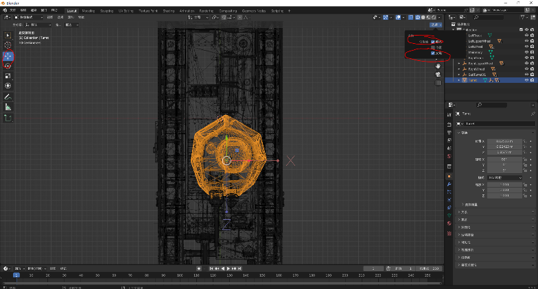炮盾Gun，将设置炮盾原点以确保坦克炮管俯仰正常
炮管Dym，设置炮管原点来确保炮弹发射位置正确
轮子UpperWheel以及Wheel，右键设置原点在质心体积来确保轮子绕轴旋转
2. 无炮塔坦歼
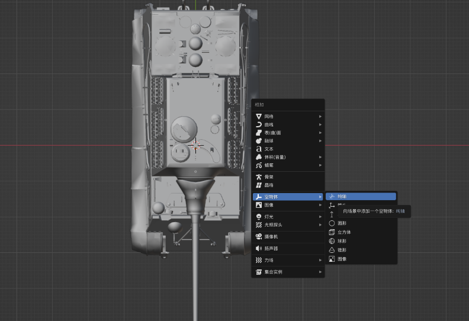对于无炮塔坦歼如猎虎，在blender中按shift+a，创建一个空轴来作为其炮塔，按g来移动空轴原点。
3. Mod 制作了内构但游戏里不显示
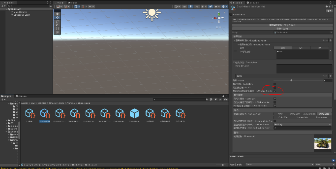查看是否勾选配置模块化信息
4. 在编辑过程中突然看不到hitbox
查看hitbox是否隐藏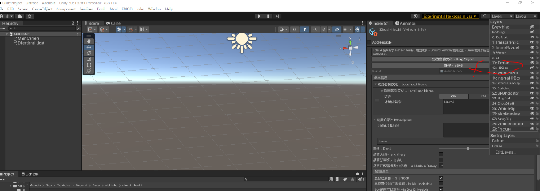
5. 坦克在车库中起飞翻转
查看是否设置坦克质量
6. 炮弹击中后产生的贴图过大
查看炮弹口径是否填写出错
7. Mod 在游戏内不显示
查看是否有音效未填
二、如何制作更好的 Mod
1. 动画
举例某些坦克上有旋转的雷达
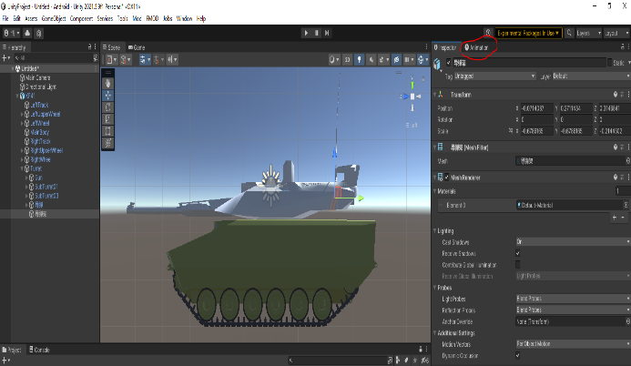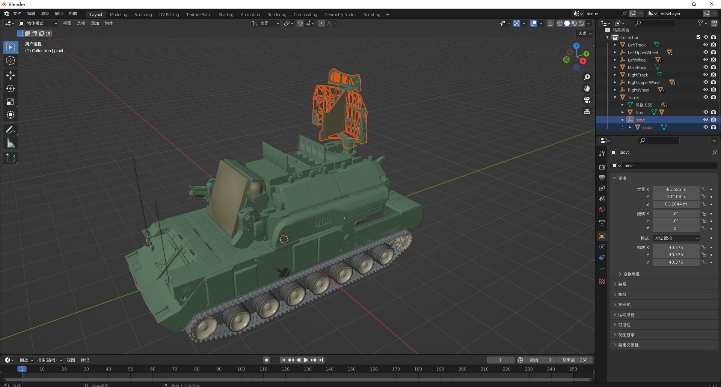如图在合适的位置创建一个空轴来保证雷达绕此轴旋转，然后将雷达放入空轴中，将空轴移动到炮塔下
接着在unity中将物体拖入左侧栏中，选中该物体的雷达部件，右侧选择animation，animation制作教程可参照下面的视频
制作完后需要将animator勾选（没有则需要在下方add component选择animator）
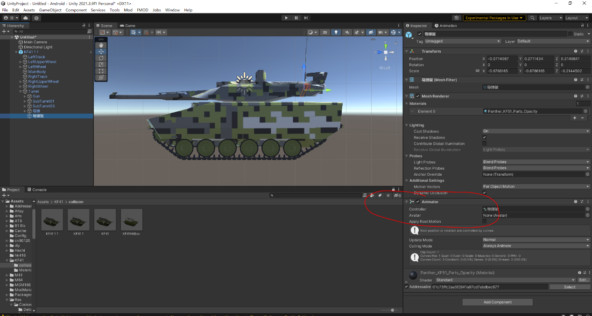
最后模型上好贴图并设置碰撞体积放入collision文件夹中保存即可。
2. 实体履带
将履带块模型分离出来后，右键设置原点在质心（体积），接着右键吸附-选中项-游标，将模型角度调整如下，然后ctrl+a应用旋转，保存即可
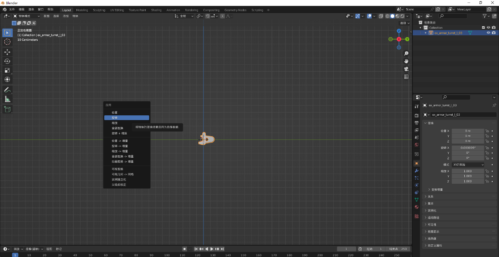
注意，当你需要设置左右两侧履带模型时，左履带模型需在上图基础上顺时针转动180度后再应用旋转
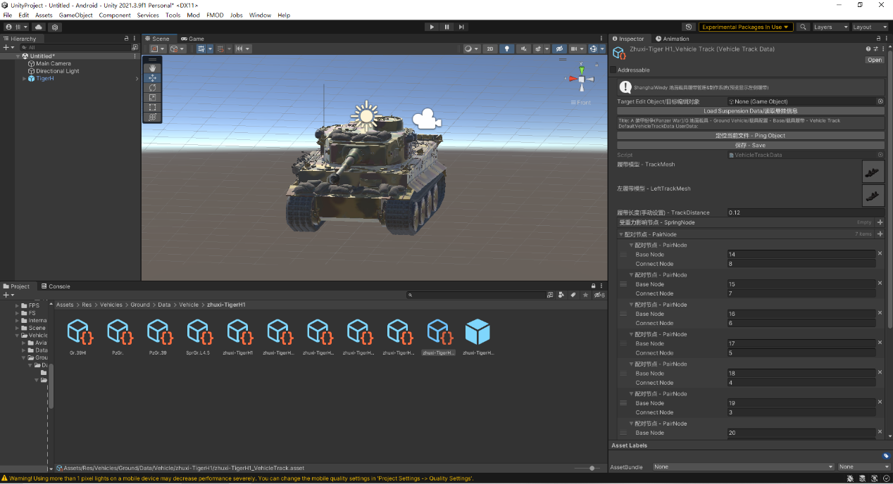
3. 不同方向炮塔不同俯仰角
大部分坦克在不同方向的俯仰角不同，可以在特殊的俯仰角位置中进行设置
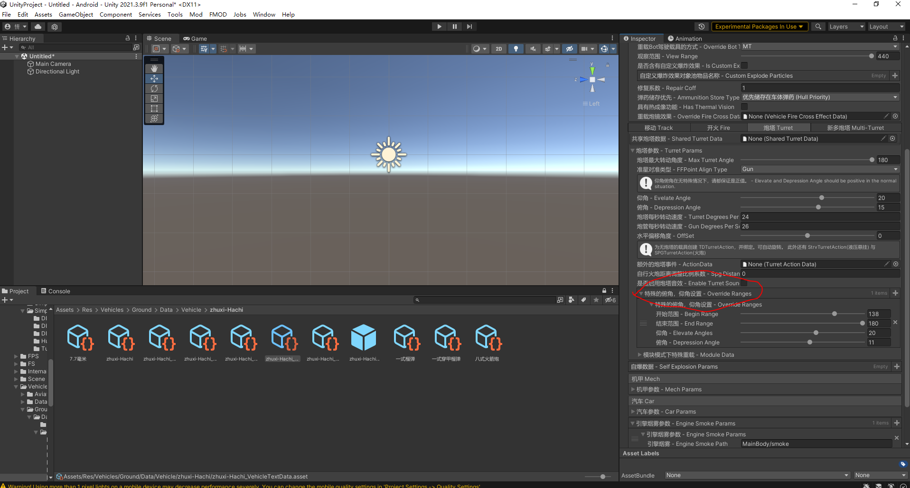
4. 如何给mod设置缩略图
将你的图片放入编辑器后，右侧设置选择sprite和single，再点击下方的apply即可
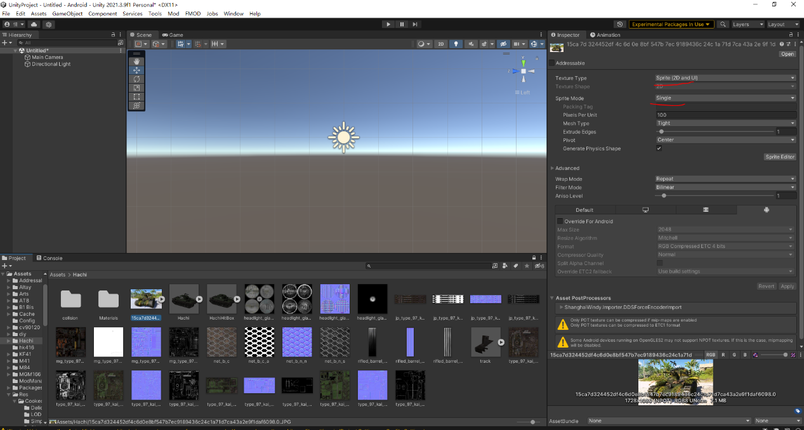
5. 如何设置爆反装甲
将爆反在HitBox中设置为reactive armor同时在内构中将其设置为内部装甲（你也可建一个内部爆反的模型）
6. Mod 查看装甲时部分装甲透明
有时当你查看一些地方的装甲时，它不会是红绿黄三色之一，而是透明的，这代表着该处法线反了，你需要用按tab进入编辑模式后选中透明处装甲，按shift+n来将法线调正。也可通过这个视频来学习如何修复法线。https://www.bilibili.com/video/BV1xr4y187Fc/?share_source=copy_web&vd_source=8d9c532ad7fc3b92734fdeaf32c1ee66
7. 去除内构模型颜色
有时当你查看内构时，有些内构模型仍然有贴图存在，这时你需要将内构模型拖入unity左侧栏中，点击reset来去除所有贴图，再对模型进行保存
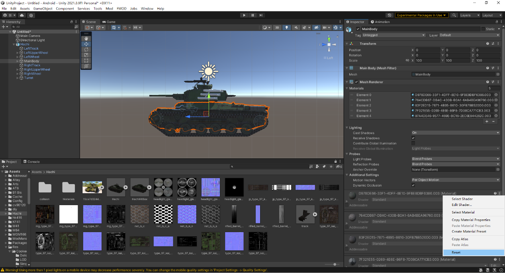
8. 给模型起名字
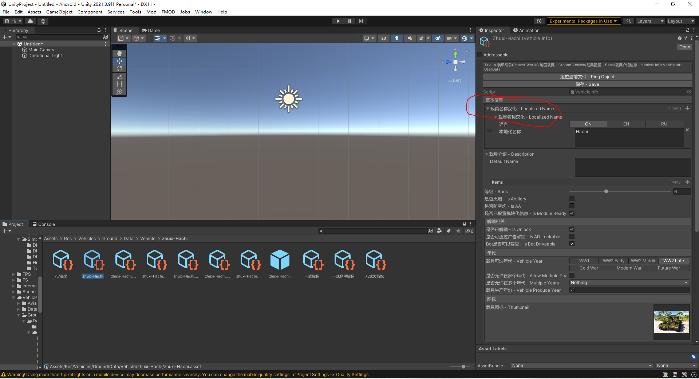
9. 多边形炮管变圆
有时你所拿到模型它的炮管和其他一些部位是多边形的，你可以在blender中点击模型，然后右键平滑着色来让它变圆
10. 多炮塔例子
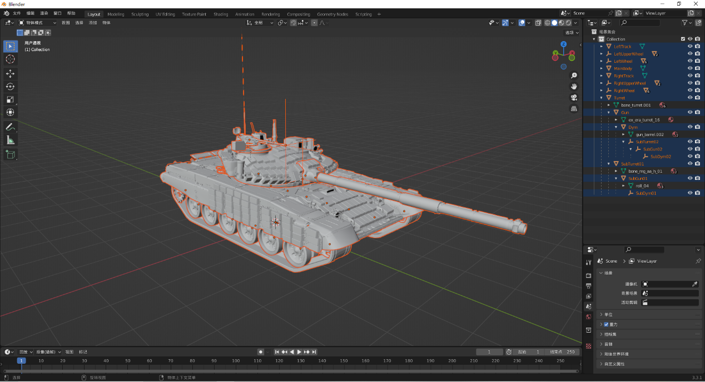
其中SubTurret02是炮塔顶部的机枪，我用空轴来作为它的dym
而SubTurret01是共轴机枪，我将三个空轴叠加来作为共轴机枪，并套在Dym下，这使得它将同主炮一同移动，而你不需要设置其他多余的数据（如炮塔俯仰角，转速）
11. 配对节点和重力节点
重力节点意味着履带在该点会受到重力影响而自然下垂
而配对节点则能够使得上下履带随负重轮一同上下运动
如下图使用

12. 如何解决mod启动停止时的猛烈磕头
一是将center of gravity摆放适中同时将其稍微下移（重心越高越不稳定），二是调整wheelcollider中右侧数据来调整摩擦
详情请见此https://blog.csdn.net/weixin_43147385/article/details/124266796
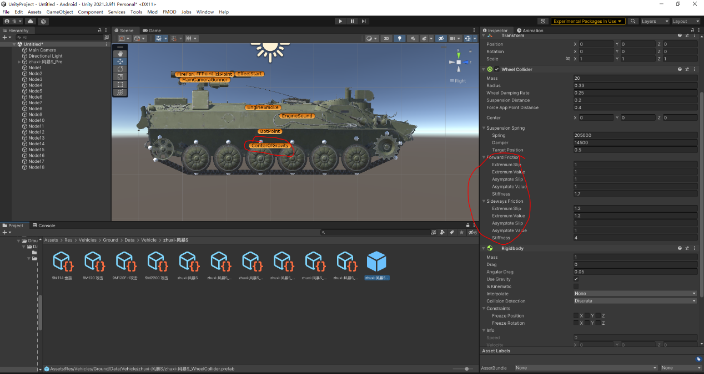